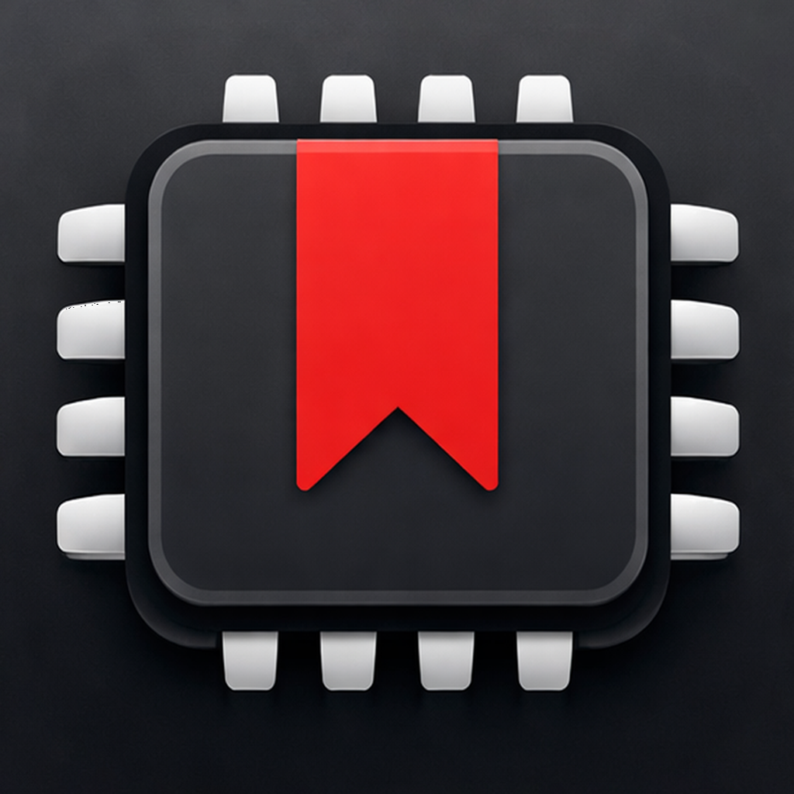

Built for focused lookup
- Browse sections by topic and jump between related concepts.
- Use ranked search to find syntax and definitions quickly.
- Keep important sections close with bookmarks and recent history.

Search VHDL concepts offline, save bookmarks, and open a daily section from the Home Screen widget.
These stable URLs are provided for App Store Connect metadata fields: